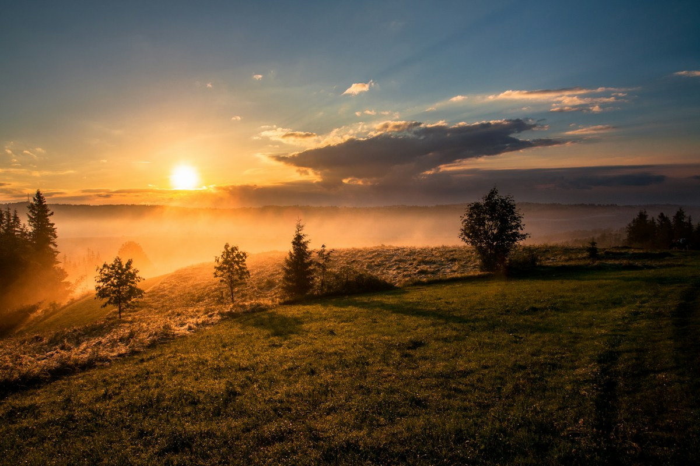

A studio for the stories you want to keep
Welcome to Lens & Moments.
Capturing Beautiful Moments, Creating Lasting Memories.
Explore the galleryA little about us
Photography that feels like being there.

Some moments are quiet: the first light over a hillside, a familiar smile, or the pause before a journey begins. At Lens & Moments, we make photographs that hold on to the feeling as much as the scene.
Our independent photography studio works with natural light, thoughtful composition and a relaxed approach. From portraits and celebrations to wild places and faraway streets, we create honest images you will want to return to.
Browse our collections for a little inspiration, or visit the media room for a selection of visual stories and sound.
Find your point of view
Featured categories


What we love to photograph
Our photography services
- 01Portrait sessionsRelaxed, personal portraits in the studio or outdoors.
- 02Weddings & celebrationsThoughtful coverage of the people and moments that matter.
- 03Travel & editorialVisual storytelling for places, publications and small brands.
- 04Nature & wildlifePatient, respectful photography of the natural world.